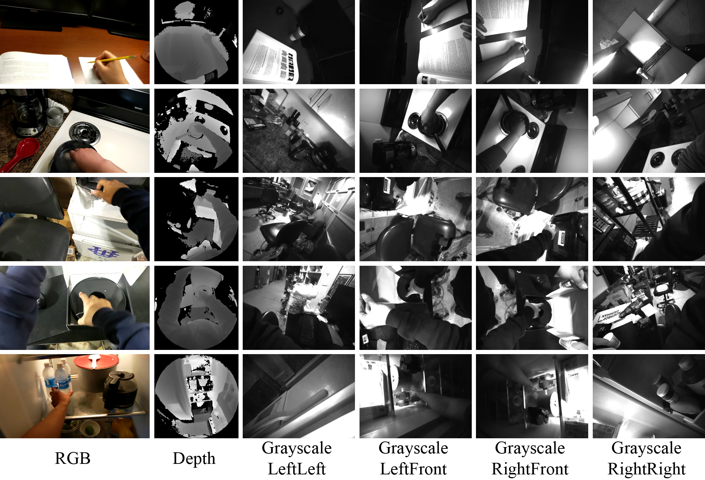
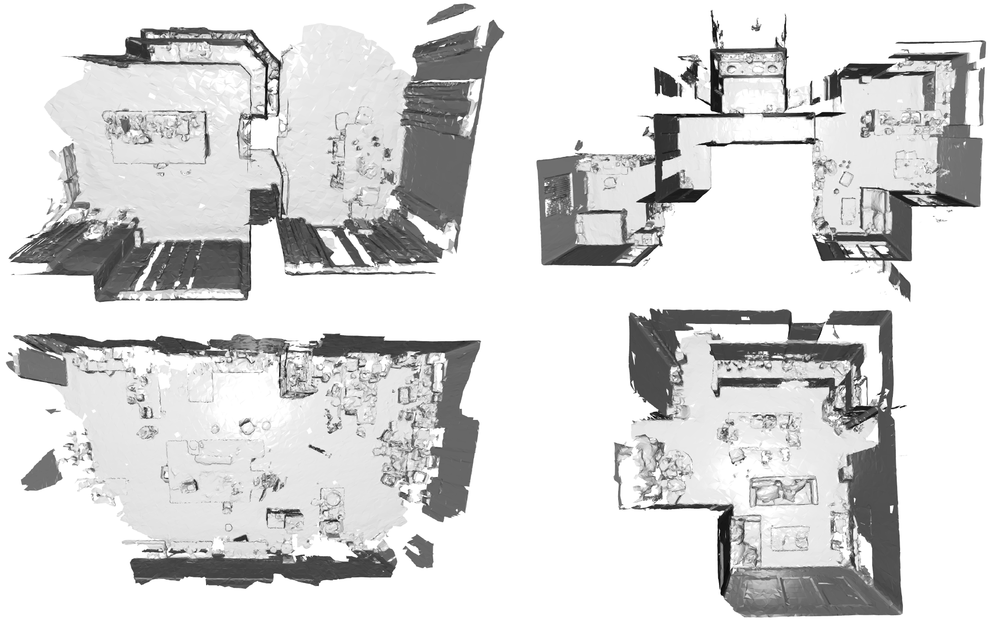
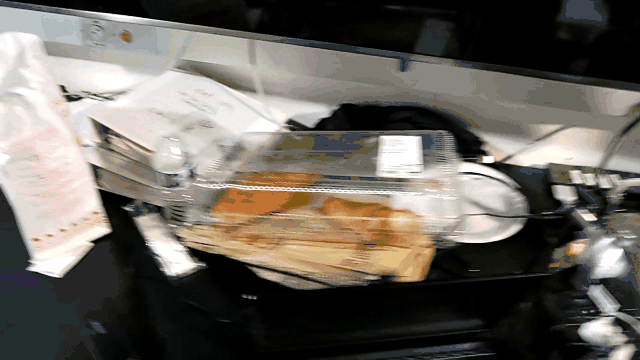
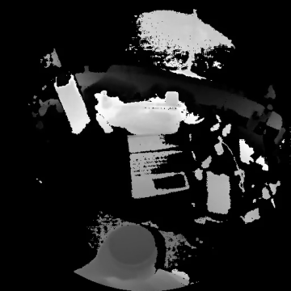
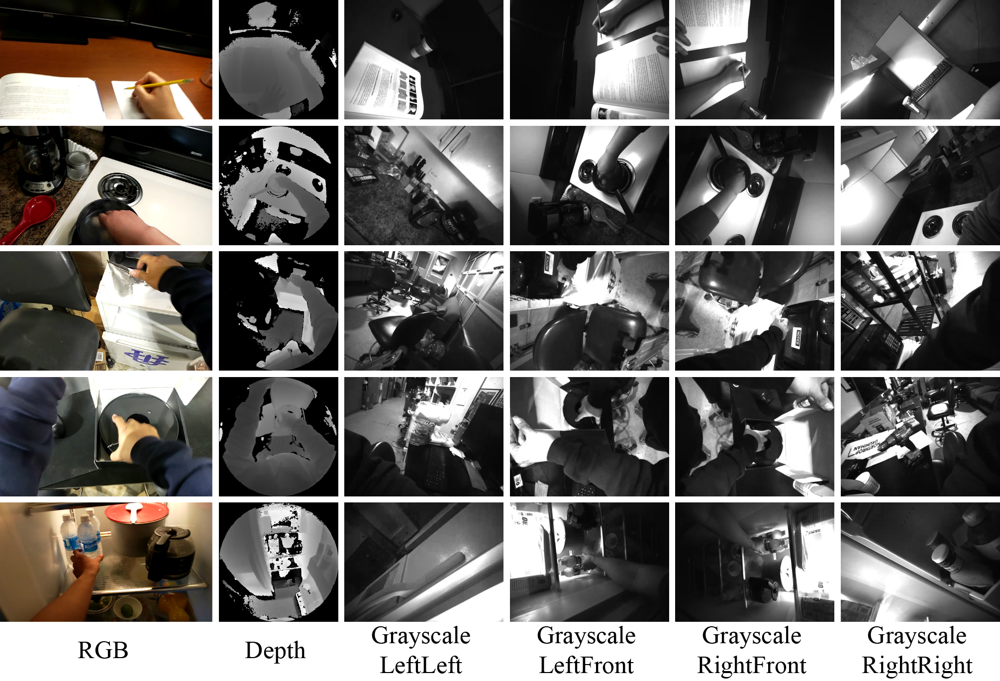
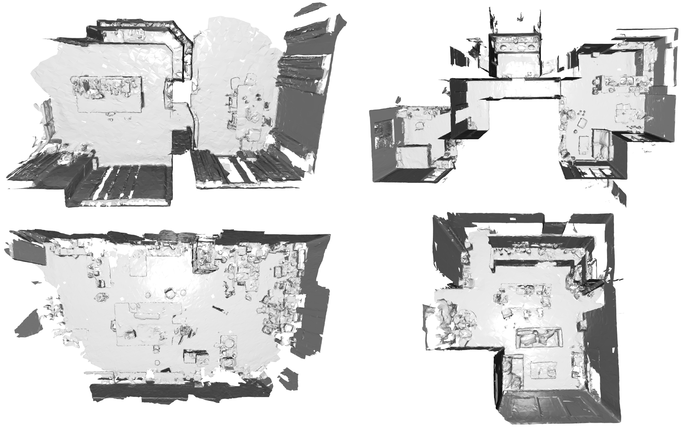
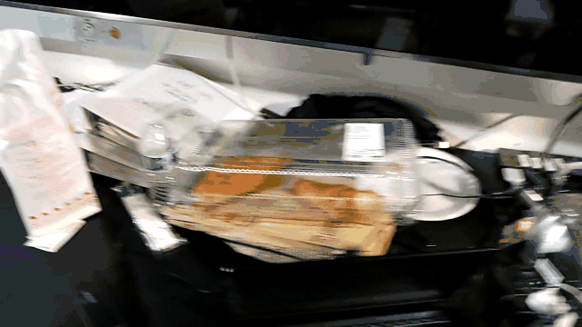
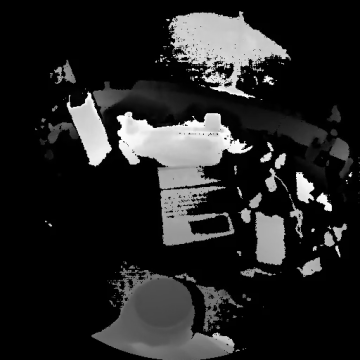
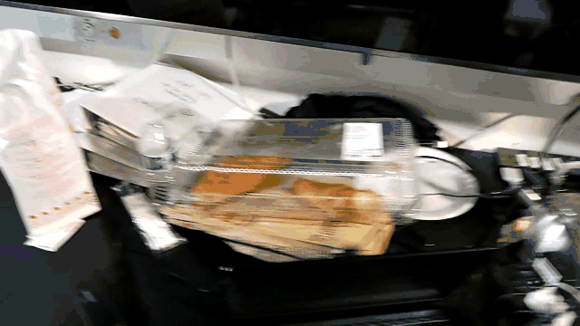
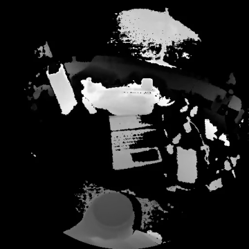

This is the official website for EgoTrack3D benchmark that explores the problem of tracking 3D objects in egocentric videos. EgoTrack3D dataset includes 50 videos captured from 14 different scenes using HoloLens2. We provide 3 types of annotations to support the study. The first annotation is per-frame 3d object locations in a predefined world coordinate. The second annotation is the object's binary state of static/dynamic where "static" pertains to an object not moving and a "dynamic" state refers to an object currently being interacted with the camera wearer. The third annotation is the per-frame 2D bounding boxes of object instances. The full dataset will be released upon acceptance.
EgoTrack3D Dataset Details
Sensor Data
- 1 RGB Camera (720x1280) @ 30 fps
- 4 Grayscale Cameras (480x640) @ 30 fps
- 1 ToF Camera AHAT (512x512) @ 45 fps (synced to 30 fps)
Additional Information
- Coarse 3D Scene Meshes
- Camera Poses
- Sensor Calibarations (Intrinsics, Extrinsics, Distortions)
RGB and Grayscale Data Visualizations

3D Scene Visualizations

Additional Video Data Visualizations


Sensor Data
- 1 RGB Camera (720x1280) @ 30 fps
- 4 Grayscale Cameras (480x640) @ 30 fps
- 1 ToF Camera AHAT (512x512) @ 45 fps (synced to 30 fps)
Additional Information
- Coarse 3D Scene Meshes
- Camera Poses
- Sensor Calibarations (Intrinsics, Extrinsics, Distortions)

3D Scene Visualizations

Additional Video Data Visualizations



